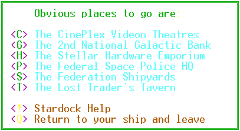

|
StarDock
Command Menu |
|

 Exit
Help
Exit
Help
|
 Navigation
Console
Navigation
Console
|
 Hardware
Command Menu
Hardware
Command Menu
|


 StarDock
Command Menu
StarDock
Command Menu
<C>
The CinePlex Videon Theatres
You can smell the
popcorn from the Hardware Emporium. Come right in to see the latest
releases from HollyWorld. You can choose from several first-run offerings
or you can opt for one of the classics. Don't take too long to make
up your mind because there are others waiting in line behind you.
<G>
The 2nd National Galactic Bank 
Here is the place
to engage in matters of high finance. You will be able to put credits
into your or another trader's account. You can take credits out of
your account. You can examine the balance in your account.
The bank allows only personal accounts. Corporate funds should be
stored in secured Citadels.
<H>
The Stellar Hardware Emporium
This is the General
Store of the Trade Wars Universe. If you want it, they have it and
if you have enough money, they'll sell it to you.
<P>
The Federal Space Police HQ
The home of law enforcement
in the galaxy. Here you can register complaints against other players,
collect rewards or see the wanted posters.
<S>
The Federation Shipyards
This is the place
where you can trade your ship in for a newer model or sell off some of
those junk ships you've gathered as spoils from your victories. You
can see all the models available and all the specifications for each style.
<T>
The Lost Trader's Tavern
Traders come here
for more than just a drink and a meal. Some of the more interesting
features of this game can be found here if you ask the right questions.
<!>
StarDock Help
Display the portion
of the documentation describing the StarDock functions.
<Q>
Return to Your Ship and Leave
Leave the Stardock
and return to the sector.
|
Exit
Help
|
 Exit
Help
Exit
Help
|
Hardware
Command Menu
|